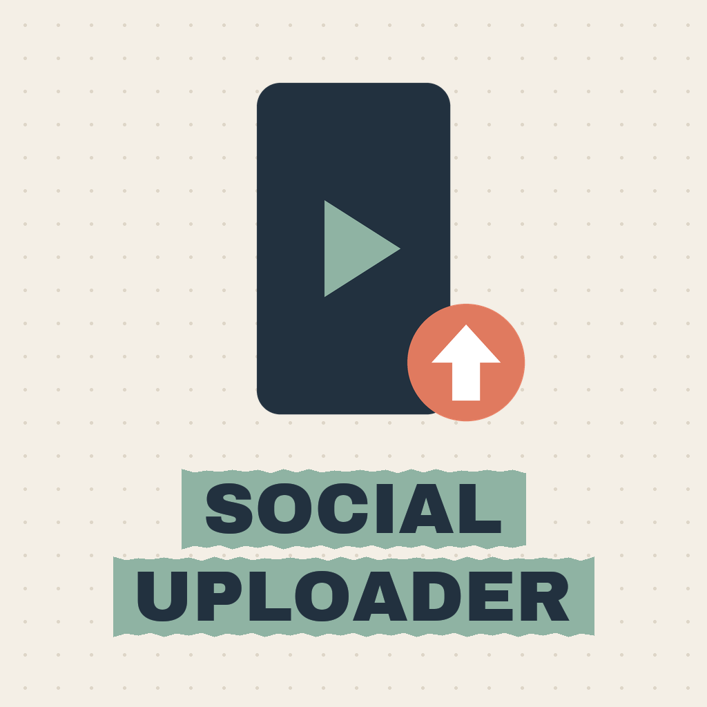

Privacy Policy
Last updated: 12 November 2026
This policy explains how Social Uploader ("the tool") handles data. The tool is a private publishing tool used only by its owner for the owner's own accounts.
1. Data we access
- Authorization tokens issued by YouTube (Google), Meta, and TikTok after the account owner signs in, so the tool can upload videos.
- Basic account information needed to confirm the connected account, such as the TikTok open ID and display name, the Facebook Page name and ID, and the Instagram username and ID.
- Upload results returned by the platforms, such as post IDs and links.
The tool does not collect data about viewers, followers, or any other users, and does not read messages, comments, or analytics.
2. How data is used
Data is used only to upload and schedule the owner's own videos and to show their upload status to the owner.
3. Storage and security
Tokens and upload records are stored only on the owner's own computer, in files readable only by the owner's user account. They are never sold, shared with third parties, or used for advertising.
4. Third-party services
Videos and their captions are sent to YouTube, Instagram, Facebook, and TikTok when uploaded. Narration audio is generated with Google Cloud Text-to-Speech from the owner's own scripts. Each service handles data under its own privacy policy.
5. Retention and deletion
Tokens are kept until access is revoked or the tool is disconnected. To delete all data, the account owner can revoke access from each platform's security settings and delete the local token files.
6. Children
The tool is not directed at children and does not knowingly process data from children.
7. Changes
This policy may be updated. The date above shows the latest version.
8. Contact
Privacy questions: vidantara.ai@gmail.com